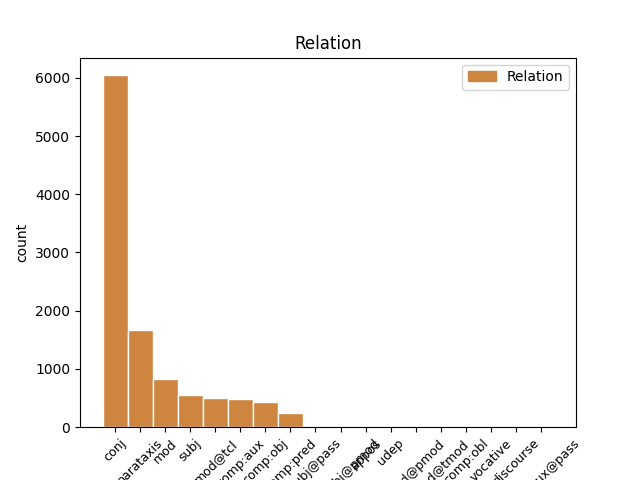
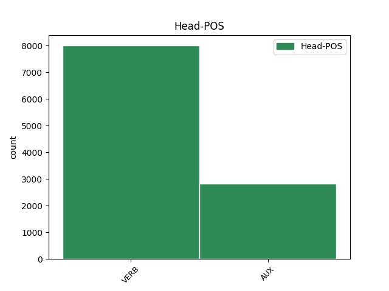
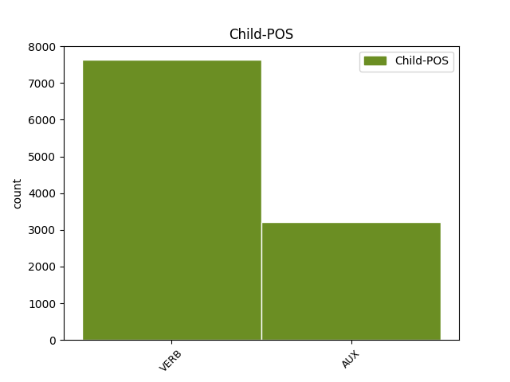

Distribution of features within this leaf



Agreement Rules sorted by frequency.
- When the dependent token is the conjunct(conj) of the head token, and the head token is VERB and the dependent token is VERB.
1 Cînd _ _ _ _ 0 _ _ _
2 unul _ _ _ _ 0 _ _ _
3 din _ _ _ _ 0 _ _ _
4 prigonitoarele _ _ _ _ 0 _ _ _
5 părți _ _ _ _ 0 _ _ _
6 cu _ _ _ _ 0 _ _ _
7 hotărîrea _ _ _ _ 0 _ _ _
8 judecății _ _ _ _ 0 _ _ _
9 va _ _ _ _ 0 _ _ _
10 jura _ _ _ _ 0 _ _ _
11 , _ _ _ _ 0 _ _ _
12 și _ _ _ _ 0 _ _ _
13 mai _ _ _ _ 0 _ _ _
14 la _ _ _ _ 0 _ _ _
15 urmă _ _ _ _ 0 _ _ _
16 va _ _ _ _ 0 _ _ _
17 găsi _ _ _ _ 0 _ _ _
18 celălalt _ _ _ _ 0 _ _ _
19 vreadnică _ _ _ _ 0 _ _ _
20 dovadă _ _ _ _ 0 _ _ _
21 împotrivă _ _ _ _ 0 _ _ _
22 , _ _ _ _ 0 _ _ _
23 cel _ _ _ _ 0 _ _ _
24 ce _ _ _ _ 0 _ _ _
25 au _ _ _ _ 0 _ _ _
26 jurat _ _ _ _ 0 _ _ _
27 strîmb _ _ _ _ 0 _ _ _
28 să _ _ _ _ 0 _ _ _
29 învinovățeaște învinovăți VERB Vmsp3 Mood=Sub|Person=3|Tense=Pres|VerbForm=Fin 0 _ _ _
30 a _ _ _ _ 0 _ _ _
31 da _ _ _ _ 0 _ _ _
32 îndoit _ _ _ _ 0 _ _ _
33 , _ _ _ _ 0 _ _ _
34 iară _ _ _ _ 0 _ _ _
35 cînd _ _ _ _ 0 _ _ _
36 prigonitoarea _ _ _ _ 0 _ _ _
37 parte _ _ _ _ 0 _ _ _
38 , _ _ _ _ 0 _ _ _
39 va _ _ _ _ 0 _ _ _
40 jura _ _ _ _ 0 _ _ _
41 după _ _ _ _ 0 _ _ _
42 cererea _ _ _ _ 0 _ _ _
43 protivnicului _ _ _ _ 0 _ _ _
44 , _ _ _ _ 0 _ _ _
45 să _ _ _ _ 0 _ _ _
46 rămîe rămâne VERB Vmsp3 Mood=Sub|Person=3|Tense=Pres|VerbForm=Fin 29 conj _ ref=PART_V_CAP_2c.53
47 nesupărat _ _ _ _ 0 _ _ _
48 , _ _ _ _ 0 _ _ _
49 și _ _ _ _ 0 _ _ _
50 de _ _ _ _ 0 _ _ _
51 să _ _ _ _ 0 _ _ _
52 va _ _ _ _ 0 _ _ _
53 găsi _ _ _ _ 0 _ _ _
54 pre _ _ _ _ 0 _ _ _
55 urmă _ _ _ _ 0 _ _ _
56 împotrivă _ _ _ _ 0 _ _ _
57 dovadă _ _ _ _ 0 _ _ _
58 . _ _ _ _ 0 _ _ _
1 În _ _ _ _ 0 _ _ _
2 scurt _ _ _ _ 0 _ _ _
3 care _ _ _ _ 0 _ _ _
4 dintre _ _ _ _ 0 _ _ _
5 cei _ _ _ _ 0 _ _ _
6 ce _ _ _ _ 0 _ _ _
7 să _ _ _ _ 0 _ _ _
8 judecă _ _ _ _ 0 _ _ _
9 să _ _ _ _ 0 _ _ _
10 va _ _ _ _ 0 _ _ _
11 dovedi _ _ _ _ 0 _ _ _
12 că _ _ _ _ 0 _ _ _
13 fiindcă _ _ _ _ 0 _ _ _
14 era fi AUX Vaii3s Mood=Ind|Number=Sing|Person=3|Tense=Imp 0 _ _ _
15 datoriu _ _ _ _ 0 _ _ _
16 , _ _ _ _ 0 _ _ _
17 și _ _ _ _ 0 _ _ _
18 cît _ _ _ _ 0 _ _ _
19 era fi AUX Vaii3s Mood=Ind|Number=Sing|Person=3|Tense=Imp 14 conj _ ref=PART_V_CAP_3.11
20 datoriu _ _ _ _ 0 _ _ _
21 protivnicului _ _ _ _ 0 _ _ _
22 său _ _ _ _ 0 _ _ _
23 , _ _ _ _ 0 _ _ _
24 nu _ _ _ _ 0 _ _ _
25 i- _ _ _ _ 0 _ _ _
26 au _ _ _ _ 0 _ _ _
27 făcut _ _ _ _ 0 _ _ _
28 îndestulare _ _ _ _ 0 _ _ _
29 , _ _ _ _ 0 _ _ _
30 acela _ _ _ _ 0 _ _ _
31 să _ _ _ _ 0 _ _ _
32 să _ _ _ _ 0 _ _ _
33 îndatoreze _ _ _ _ 0 _ _ _
34 să _ _ _ _ 0 _ _ _
35 -i _ _ _ _ 0 _ _ _
36 plătească _ _ _ _ 0 _ _ _
37 și _ _ _ _ 0 _ _ _
38 cheltuiala _ _ _ _ 0 _ _ _
39 judecății _ _ _ _ 0 _ _ _
40 . _ _ _ _ 0 _ _ _
1 Fur _ _ _ _ 0 _ _ _
2 zicem _ _ _ _ 0 _ _ _
3 celui _ _ _ _ 0 _ _ _
4 ce _ _ _ _ 0 _ _ _
5 fură fura VERB Vmis3p Mood=Ind|Number=Plur|Person=3|Tense=Past|VerbForm=Fin 0 _ _ _
6 adecă _ _ _ _ 0 _ _ _
7 ia el VERB Vmip3s Mood=Ind|Number=Sing|Person=3|Tense=Pres|VerbForm=Fin 5 parataxis _ ref=PART_V_CAP_3.1
8 pre _ _ _ _ 0 _ _ _
9 ascuns _ _ _ _ 0 _ _ _
10 . _ _ _ _ 0 _ _ _
1 Iară _ _ _ _ 0 _ _ _
2 cînd _ _ _ _ 0 _ _ _
3 stăpînul _ _ _ _ 0 _ _ _
4 nu _ _ _ _ 0 _ _ _
5 va _ _ _ _ 0 _ _ _
6 avea avea VERB Vmii3s Mood=Ind|Number=Sing|Person=3|Tense=Imp|VerbForm=Fin 0 _ _ _
7 trebuință _ _ _ _ 0 _ _ _
8 de _ _ _ _ 0 _ _ _
9 arătură _ _ _ _ 0 _ _ _
10 , _ _ _ _ 0 _ _ _
11 și _ _ _ _ 0 _ _ _
12 va vrea AUX Vaip3s Mood=Ind|Number=Sing|Person=3|Tense=Pres 6 conj _ ref=COMPLETARE.4
13 ceare _ _ _ _ 0 _ _ _
14 bani _ _ _ _ 0 _ _ _
15 , _ _ _ _ 0 _ _ _
16 să _ _ _ _ 0 _ _ _
17 ia _ _ _ _ 0 _ _ _
18 de _ _ _ _ 0 _ _ _
19 plug _ _ _ _ 0 _ _ _
20 talere _ _ _ _ 0 _ _ _
21 patru _ _ _ _ 0 _ _ _
22 , _ _ _ _ 0 _ _ _
23 pentru _ _ _ _ 0 _ _ _
24 ziua _ _ _ _ 0 _ _ _
25 de _ _ _ _ 0 _ _ _
26 arătură _ _ _ _ 0 _ _ _
27 , _ _ _ _ 0 _ _ _
28 plătindu _ _ _ _ 0 _ _ _
29 -i _ _ _ _ 0 _ _ _
30 acești _ _ _ _ 0 _ _ _
31 bani _ _ _ _ 0 _ _ _
32 toți _ _ _ _ 0 _ _ _
33 oamenii _ _ _ _ 0 _ _ _
34 cîți _ _ _ _ 0 _ _ _
35 sînt _ _ _ _ 0 _ _ _
36 întovărășiți _ _ _ _ 0 _ _ _
37 la _ _ _ _ 0 _ _ _
38 acest _ _ _ _ 0 _ _ _
39 plug _ _ _ _ 0 _ _ _
40 . _ _ _ _ 0 _ _ _
1 Prea _ _ _ _ 0 _ _ _
2 Înălțate _ _ _ _ 0 _ _ _
3 Doamne _ _ _ _ 0 _ _ _
4 ! _ _ _ _ 0 _ _ _
5 După _ _ _ _ 0 _ _ _
6 luminată _ _ _ _ 0 _ _ _
7 porunca _ _ _ _ 0 _ _ _
8 Mării _ _ _ _ 0 _ _ _
9 tale _ _ _ _ 0 _ _ _
10 adunîndu _ _ _ _ 0 _ _ _
11 -ne _ _ _ _ 0 _ _ _
12 în _ _ _ _ 0 _ _ _
13 multe _ _ _ _ 0 _ _ _
14 rînduri _ _ _ _ 0 _ _ _
15 cu _ _ _ _ 0 _ _ _
16 toții _ _ _ _ 0 _ _ _
17 la _ _ _ _ 0 _ _ _
18 un _ _ _ _ 0 _ _ _
19 loc _ _ _ _ 0 _ _ _
20 , _ _ _ _ 0 _ _ _
21 am avea AUX Vaip1p Mood=Ind|Number=Plur|Person=1|Tense=Pres 0 _ _ _
22 cetit _ _ _ _ 0 _ _ _
23 cu _ _ _ _ 0 _ _ _
24 luare _ _ _ _ 0 _ _ _
25 aminte _ _ _ _ 0 _ _ _
26 Pravila _ _ _ _ 0 _ _ _
27 ce _ _ _ _ 0 _ _ _
28 s _ _ _ _ 0 _ _ _
29 -au _ _ _ _ 0 _ _ _
30 alcătuit _ _ _ _ 0 _ _ _
31 de _ _ _ _ 0 _ _ _
32 cătră _ _ _ _ 0 _ _ _
33 Măria _ _ _ _ 0 _ _ _
34 ta _ _ _ _ 0 _ _ _
35 , _ _ _ _ 0 _ _ _
36 și _ _ _ _ 0 _ _ _
37 ne _ _ _ _ 0 _ _ _
38 pliroforisirăm pliroforisi VERB Vmis1p Mood=Ind|Number=Plur|Person=1|Tense=Past|VerbForm=Fin 21 conj _ ref=ANAFORA.1|SpaceAfter=No
39 , _ _ _ _ 0 _ _ _
40 că _ _ _ _ 0 _ _ _
41 alcătuirea _ _ _ _ 0 _ _ _
42 aceștii _ _ _ _ 0 _ _ _
43 Pravili _ _ _ _ 0 _ _ _
44 este _ _ _ _ 0 _ _ _
45 o _ _ _ _ 0 _ _ _
46 deslușire _ _ _ _ 0 _ _ _
47 a _ _ _ _ 0 _ _ _
48 Pravililor _ _ _ _ 0 _ _ _
49 Împărătești _ _ _ _ 0 _ _ _
50 , _ _ _ _ 0 _ _ _
51 ce _ _ _ _ 0 _ _ _
52 să _ _ _ _ 0 _ _ _
53 obicinuesc _ _ _ _ 0 _ _ _
54 aici _ _ _ _ 0 _ _ _
55 în _ _ _ _ 0 _ _ _
56 pămîntul _ _ _ _ 0 _ _ _
57 nostru _ _ _ _ 0 _ _ _
58 , _ _ _ _ 0 _ _ _
59 și _ _ _ _ 0 _ _ _
60 a _ _ _ _ 0 _ _ _
61 vechilor _ _ _ _ 0 _ _ _
62 , _ _ _ _ 0 _ _ _
63 și _ _ _ _ 0 _ _ _
64 a _ _ _ _ 0 _ _ _
65 canonisitelor _ _ _ _ 0 _ _ _
66 obiceaiuri _ _ _ _ 0 _ _ _
67 ale _ _ _ _ 0 _ _ _
68 pămîntului _ _ _ _ 0 _ _ _
69 , _ _ _ _ 0 _ _ _
70 nefiind _ _ _ _ 0 _ _ _
71 împotrivitoare _ _ _ _ 0 _ _ _
72 celor _ _ _ _ 0 _ _ _
73 vechi _ _ _ _ 0 _ _ _
74 urmate _ _ _ _ 0 _ _ _
75 pînă _ _ _ _ 0 _ _ _
76 acum _ _ _ _ 0 _ _ _
77 . _ _ _ _ 0 _ _ _
1 Cînd _ _ _ _ 0 _ _ _
2 vechilul _ _ _ _ 0 _ _ _
3 știind _ _ _ _ 0 _ _ _
4 moartea _ _ _ _ 0 _ _ _
5 nu _ _ _ _ 0 _ _ _
6 va _ _ _ _ 0 _ _ _
7 conteni _ _ _ _ 0 _ _ _
8 , _ _ _ _ 0 _ _ _
9 atunci _ _ _ _ 0 _ _ _
10 orice _ _ _ _ 0 _ _ _
11 pagubă _ _ _ _ 0 _ _ _
12 să _ _ _ _ 0 _ _ _
13 va _ _ _ _ 0 _ _ _
14 pricinui _ _ _ _ 0 _ _ _
15 din _ _ _ _ 0 _ _ _
16 orice _ _ _ _ 0 _ _ _
17 pricină _ _ _ _ 0 _ _ _
18 , _ _ _ _ 0 _ _ _
19 iaste _ _ _ _ 0 _ _ _
20 datoriu _ _ _ _ 0 _ _ _
21 a _ _ _ _ 0 _ _ _
22 o _ _ _ _ 0 _ _ _
23 răspunde _ _ _ _ 0 _ _ _
24 , _ _ _ _ 0 _ _ _
25 căci _ _ _ _ 0 _ _ _
26 de _ _ _ _ 0 _ _ _
27 contenea _ _ _ _ 0 _ _ _
28 , _ _ _ _ 0 _ _ _
29 nu _ _ _ _ 0 _ _ _
30 o _ _ _ _ 0 _ _ _
31 cerca încerca VERB Vmii3s Mood=Ind|Number=Sing|Person=3|Tense=Imp|VerbForm=Fin 0 _ _ _
32 poate putea AUX Vaip3s Mood=Ind|Number=Sing|Person=3|Tense=Pres 31 parataxis _ ref=PART_III_CAP_19.20
33 moștenitoriul _ _ _ _ 0 _ _ _
34 . _ _ _ _ 0 _ _ _
1 Ducîndu _ _ _ _ 0 _ _ _
2 -l _ _ _ _ 0 _ _ _
3 , _ _ _ _ 0 _ _ _
4 ori _ _ _ _ 0 _ _ _
5 la _ _ _ _ 0 _ _ _
6 moșia _ _ _ _ 0 _ _ _
7 lui _ _ _ _ 0 _ _ _
8 , _ _ _ _ 0 _ _ _
9 sau _ _ _ _ 0 _ _ _
10 aiurea _ _ _ _ 0 _ _ _
11 unde _ _ _ _ 0 _ _ _
12 are _ _ _ _ 0 _ _ _
13 trebuință _ _ _ _ 0 _ _ _
14 , _ _ _ _ 0 _ _ _
15 pînă _ _ _ _ 0 _ _ _
16 la _ _ _ _ 0 _ _ _
17 un _ _ _ _ 0 _ _ _
18 loc _ _ _ _ 0 _ _ _
19 cale _ _ _ _ 0 _ _ _
20 de _ _ _ _ 0 _ _ _
21 șase _ _ _ _ 0 _ _ _
22 ceasuri _ _ _ _ 0 _ _ _
23 , _ _ _ _ 0 _ _ _
24 iar _ _ _ _ 0 _ _ _
25 cînd _ _ _ _ 0 _ _ _
26 va _ _ _ _ 0 _ _ _
27 fi _ _ _ _ 0 _ _ _
28 locul _ _ _ _ 0 _ _ _
29 unde _ _ _ _ 0 _ _ _
30 ceare _ _ _ _ 0 _ _ _
31 stăpînul _ _ _ _ 0 _ _ _
32 mai _ _ _ _ 0 _ _ _
33 depărtat _ _ _ _ 0 _ _ _
34 decît _ _ _ _ 0 _ _ _
35 cale _ _ _ _ 0 _ _ _
36 de _ _ _ _ 0 _ _ _
37 șase _ _ _ _ 0 _ _ _
38 ceasuri _ _ _ _ 0 _ _ _
39 , _ _ _ _ 0 _ _ _
40 sau _ _ _ _ 0 _ _ _
41 nu _ _ _ _ 0 _ _ _
42 va vrea AUX Vaip3s Mood=Ind|Number=Sing|Person=3|Tense=Pres 0 _ _ _
43 avea avea VERB Vmii3s Mood=Ind|Number=Sing|Person=3|Tense=Imp|VerbForm=Fin 42 comp:aux _ ref=COMPLETARE.6
44 stăpînul _ _ _ _ 0 _ _ _
45 trebuință _ _ _ _ 0 _ _ _
46 de _ _ _ _ 0 _ _ _
47 leamne _ _ _ _ 0 _ _ _
48 , _ _ _ _ 0 _ _ _
49 atunci _ _ _ _ 0 _ _ _
50 să _ _ _ _ 0 _ _ _
51 plătească _ _ _ _ 0 _ _ _
52 clăcașul _ _ _ _ 0 _ _ _
53 cu _ _ _ _ 0 _ _ _
54 bani _ _ _ _ 0 _ _ _
55 , _ _ _ _ 0 _ _ _
56 carul _ _ _ _ 0 _ _ _
57 po _ _ _ _ 0 _ _ _
58 talere _ _ _ _ 0 _ _ _
59 trei _ _ _ _ 0 _ _ _
60 . _ _ _ _ 0 _ _ _
1 Cartea _ _ _ _ 0 _ _ _
2 de _ _ _ _ 0 _ _ _
3 blestem _ _ _ _ 0 _ _ _
4 să _ _ _ _ 0 _ _ _
5 dă da VERB Vmip3s Mood=Ind|Number=Sing|Person=3|Tense=Pres|VerbForm=Fin 0 _ _ _
6 unde _ _ _ _ 0 _ _ _
7 , _ _ _ _ 0 _ _ _
8 și _ _ _ _ 0 _ _ _
9 cînd _ _ _ _ 0 _ _ _
10 , _ _ _ _ 0 _ _ _
11 și _ _ _ _ 0 _ _ _
12 cum _ _ _ _ 0 _ _ _
13 să _ _ _ _ 0 _ _ _
14 dă da VERB Vmip3s Mood=Ind|Number=Sing|Person=3|Tense=Pres|VerbForm=Fin 5 mod _ ref=PART_V_CAP_2d.54
15 și _ _ _ _ 0 _ _ _
16 jurămîntul _ _ _ _ 0 _ _ _
17 , _ _ _ _ 0 _ _ _
18 drept _ _ _ _ 0 _ _ _
19 aceia _ _ _ _ 0 _ _ _
20 . _ _ _ _ 0 _ _ _
1 De _ _ _ _ 0 _ _ _
2 câte _ _ _ _ 0 _ _ _
3 ori _ _ _ _ 0 _ _ _
4 la _ _ _ _ 0 _ _ _
5 tocmeli _ _ _ _ 0 _ _ _
6 o _ _ _ _ 0 _ _ _
7 vorbă _ _ _ _ 0 _ _ _
8 are avea VERB Vmip3s Mood=Ind|Number=Sing|Person=3|Tense=Pres|VerbForm=Fin 12 mod@tcl _ ref=PART_V_CAP_2a.12
9 doao _ _ _ _ 0 _ _ _
10 înțelegeri _ _ _ _ 0 _ _ _
11 , _ _ _ _ 0 _ _ _
12 priimim primi VERB Vmip1p Mood=Ind|Number=Plur|Person=1|Tense=Pres|VerbForm=Fin 0 _ _ _
13 ceia _ _ _ _ 0 _ _ _
14 ce _ _ _ _ 0 _ _ _
15 să _ _ _ _ 0 _ _ _
16 potriveaște _ _ _ _ 0 _ _ _
17 , _ _ _ _ 0 _ _ _
18 sau _ _ _ _ 0 _ _ _
19 ceia _ _ _ _ 0 _ _ _
20 ce _ _ _ _ 0 _ _ _
21 iaste _ _ _ _ 0 _ _ _
22 spre _ _ _ _ 0 _ _ _
23 siguranția _ _ _ _ 0 _ _ _
24 lucrului _ _ _ _ 0 _ _ _
25 tocmit _ _ _ _ 0 _ _ _
26 . _ _ _ _ 0 _ _ _
1 Cînd _ _ _ _ 0 _ _ _
2 judecătorii _ _ _ _ 0 _ _ _
3 vor vrea AUX Vaip3p Mood=Ind|Number=Plur|Person=3|Tense=Pres 13 mod _ ref=PART_V_CAP_3.6
4 cunoaște _ _ _ _ 0 _ _ _
5 , _ _ _ _ 0 _ _ _
6 că _ _ _ _ 0 _ _ _
7 cu _ _ _ _ 0 _ _ _
8 greșală _ _ _ _ 0 _ _ _
9 au _ _ _ _ 0 _ _ _
10 hotărît _ _ _ _ 0 _ _ _
11 , _ _ _ _ 0 _ _ _
12 volnici _ _ _ _ 0 _ _ _
13 sînt fi AUX Vaip3p Mood=Ind|Number=Plur|Person=3|Tense=Pres 0 _ _ _
14 înaintea _ _ _ _ 0 _ _ _
15 Apellații _ _ _ _ 0 _ _ _
16 prigonitoarelor _ _ _ _ 0 _ _ _
17 părți _ _ _ _ 0 _ _ _
18 , _ _ _ _ 0 _ _ _
19 să _ _ _ _ 0 _ _ _
20 -și _ _ _ _ 0 _ _ _
21 ia _ _ _ _ 0 _ _ _
22 înapoi _ _ _ _ 0 _ _ _
23 hotărîrea _ _ _ _ 0 _ _ _
24 , _ _ _ _ 0 _ _ _
25 și _ _ _ _ 0 _ _ _
26 să _ _ _ _ 0 _ _ _
27 o _ _ _ _ 0 _ _ _
28 îndrepteaze _ _ _ _ 0 _ _ _
29 , _ _ _ _ 0 _ _ _
30 iară _ _ _ _ 0 _ _ _
31 după _ _ _ _ 0 _ _ _
32 Apellație _ _ _ _ 0 _ _ _
33 nu _ _ _ _ 0 _ _ _
34 . _ _ _ _ 0 _ _ _
1 Cîți _ _ _ _ 0 _ _ _
2 din _ _ _ _ 0 _ _ _
3 cei _ _ _ _ 0 _ _ _
4 ce _ _ _ _ 0 _ _ _
5 au _ _ _ _ 0 _ _ _
6 judecată _ _ _ _ 0 _ _ _
7 vor vrea AUX Vaip3p Mood=Ind|Number=Plur|Person=3|Tense=Pres 24 subj _ ref=PART_V_CAP_4.5
8 da _ _ _ _ 0 _ _ _
9 în _ _ _ _ 0 _ _ _
10 scris _ _ _ _ 0 _ _ _
11 la _ _ _ _ 0 _ _ _
12 judecată _ _ _ _ 0 _ _ _
13 că _ _ _ _ 0 _ _ _
14 să _ _ _ _ 0 _ _ _
15 vor _ _ _ _ 0 _ _ _
16 mulțămi _ _ _ _ 0 _ _ _
17 pre _ _ _ _ 0 _ _ _
18 hotărîrea _ _ _ _ 0 _ _ _
19 acei _ _ _ _ 0 _ _ _
20 judecăți _ _ _ _ 0 _ _ _
21 , _ _ _ _ 0 _ _ _
22 aceia _ _ _ _ 0 _ _ _
23 nu _ _ _ _ 0 _ _ _
24 pot putea AUX Vaip3p Mood=Ind|Number=Plur|Person=3|Tense=Pres 0 _ _ _
25 porni _ _ _ _ 0 _ _ _
26 Apellație _ _ _ _ 0 _ _ _
27 . _ _ _ _ 0 _ _ _
1 Cînd _ _ _ _ 0 _ _ _
2 să _ _ _ _ 0 _ _ _
3 va vrea AUX Vaip3s Mood=Ind|Number=Sing|Person=3|Tense=Pres 17 mod _ ref=PART_V_CAP_2c.52
4 provalisi _ _ _ _ 0 _ _ _
5 jurămînt _ _ _ _ 0 _ _ _
6 pentru _ _ _ _ 0 _ _ _
7 sume _ _ _ _ 0 _ _ _
8 de _ _ _ _ 0 _ _ _
9 datorii _ _ _ _ 0 _ _ _
10 , _ _ _ _ 0 _ _ _
11 cel _ _ _ _ 0 _ _ _
12 ce _ _ _ _ 0 _ _ _
13 e _ _ _ _ 0 _ _ _
14 datoriu _ _ _ _ 0 _ _ _
15 , _ _ _ _ 0 _ _ _
16 să _ _ _ _ 0 _ _ _
17 sileaște sili VERB Vmip3s Mood=Ind|Number=Sing|Person=3|Tense=Pres|VerbForm=Fin 0 _ _ _
18 întîi _ _ _ _ 0 _ _ _
19 să _ _ _ _ 0 _ _ _
20 pue _ _ _ _ 0 _ _ _
21 jos _ _ _ _ 0 _ _ _
22 suma _ _ _ _ 0 _ _ _
23 la _ _ _ _ 0 _ _ _
24 judecată _ _ _ _ 0 _ _ _
25 , _ _ _ _ 0 _ _ _
26 și _ _ _ _ 0 _ _ _
27 apoi _ _ _ _ 0 _ _ _
28 să _ _ _ _ 0 _ _ _
29 jure _ _ _ _ 0 _ _ _
30 celălalt _ _ _ _ 0 _ _ _
31 . _ _ _ _ 0 _ _ _
1 Cine _ _ _ _ 0 _ _ _
2 va _ _ _ _ 0 _ _ _
3 arăta _ _ _ _ 0 _ _ _
4 copie _ _ _ _ 0 _ _ _
5 de _ _ _ _ 0 _ _ _
6 carte _ _ _ _ 0 _ _ _
7 , _ _ _ _ 0 _ _ _
8 iaste fi AUX Vaip3s Mood=Ind|Number=Sing|Person=3|Tense=Pres 0 _ _ _
9 datoriu _ _ _ _ 0 _ _ _
10 cînd _ _ _ _ 0 _ _ _
11 i _ _ _ _ 0 _ _ _
12 să _ _ _ _ 0 _ _ _
13 va vrea AUX Vaip3s Mood=Ind|Number=Sing|Person=3|Tense=Pres 8 mod@tcl _ ref=PART_V_CAP_2a.29
14 cere _ _ _ _ 0 _ _ _
15 să _ _ _ _ 0 _ _ _
16 scoață _ _ _ _ 0 _ _ _
17 și _ _ _ _ 0 _ _ _
18 pre _ _ _ _ 0 _ _ _
19 cea _ _ _ _ 0 _ _ _
20 adevărată _ _ _ _ 0 _ _ _
21 , _ _ _ _ 0 _ _ _
22 sau _ _ _ _ 0 _ _ _
23 îndată _ _ _ _ 0 _ _ _
24 avîndu _ _ _ _ 0 _ _ _
25 -o _ _ _ _ 0 _ _ _
26 la _ _ _ _ 0 _ _ _
27 îndemână _ _ _ _ 0 _ _ _
28 , _ _ _ _ 0 _ _ _
29 sau _ _ _ _ 0 _ _ _
30 cu _ _ _ _ 0 _ _ _
31 soroc _ _ _ _ 0 _ _ _
32 de _ _ _ _ 0 _ _ _
33 nu _ _ _ _ 0 _ _ _
34 o _ _ _ _ 0 _ _ _
35 va _ _ _ _ 0 _ _ _
36 avea _ _ _ _ 0 _ _ _
37 la _ _ _ _ 0 _ _ _
38 îndemână _ _ _ _ 0 _ _ _
39 . _ _ _ _ 0 _ _ _
1 Cine _ _ _ _ 0 _ _ _
2 cere cere VERB Vmip3s Mood=Ind|Number=Sing|Person=3|Tense=Pres|VerbForm=Fin 4 subj _ ref=PART_V_CAP_2.4
3 atunci _ _ _ _ 0 _ _ _
4 căștigă căștigă VERB Vmip2s Mood=Ind|Number=Sing|Person=2|Tense=Pres|VerbForm=Fin 0 _ _ _
5 , _ _ _ _ 0 _ _ _
6 cînd _ _ _ _ 0 _ _ _
7 va _ _ _ _ 0 _ _ _
8 dovedi _ _ _ _ 0 _ _ _
9 că _ _ _ _ 0 _ _ _
10 lucrul _ _ _ _ 0 _ _ _
11 ce _ _ _ _ 0 _ _ _
12 să _ _ _ _ 0 _ _ _
13 cere _ _ _ _ 0 _ _ _
14 iaste _ _ _ _ 0 _ _ _
15 al _ _ _ _ 0 _ _ _
16 lui _ _ _ _ 0 _ _ _
17 , _ _ _ _ 0 _ _ _
18 iară _ _ _ _ 0 _ _ _
19 nu _ _ _ _ 0 _ _ _
20 cînd _ _ _ _ 0 _ _ _
21 va _ _ _ _ 0 _ _ _
22 dovedi _ _ _ _ 0 _ _ _
23 că _ _ _ _ 0 _ _ _
24 nu _ _ _ _ 0 _ _ _
25 iaste _ _ _ _ 0 _ _ _
26 al _ _ _ _ 0 _ _ _
27 protivnicului _ _ _ _ 0 _ _ _
28 său _ _ _ _ 0 _ _ _
29 . _ _ _ _ 0 _ _ _
1 Cîte _ _ _ _ 0 _ _ _
2 lucruri _ _ _ _ 0 _ _ _
3 jăfuite _ _ _ _ 0 _ _ _
4 să _ _ _ _ 0 _ _ _
5 găsesc găsi VERB Vmsp1s Mood=Sub|Number=Sing|Person=1|Tense=Pres|VerbForm=Fin 17 comp:obj _ ref=PART_V_CAP_2.3
6 la _ _ _ _ 0 _ _ _
7 tîlhari _ _ _ _ 0 _ _ _
8 să _ _ _ _ 0 _ _ _
9 să _ _ _ _ 0 _ _ _
10 cerceteaze _ _ _ _ 0 _ _ _
11 ale _ _ _ _ 0 _ _ _
12 cui _ _ _ _ 0 _ _ _
13 sînt _ _ _ _ 0 _ _ _
14 și _ _ _ _ 0 _ _ _
15 să _ _ _ _ 0 _ _ _
16 să _ _ _ _ 0 _ _ _
17 dea da VERB Vmsp3 Mood=Sub|Person=3|Tense=Pres|VerbForm=Fin 0 _ _ _
18 stăpînului _ _ _ _ 0 _ _ _
19 acelor _ _ _ _ 0 _ _ _
20 lucruri _ _ _ _ 0 _ _ _
21 . _ _ _ _ 0 _ _ _
1 Cîte _ _ _ _ 0 _ _ _
2 am avea AUX Vaip1p Mood=Ind|Number=Plur|Person=1|Tense=Pres 8 comp:obj _ ref=PART_V_CAP_2d.55
3 legiuit _ _ _ _ 0 _ _ _
4 pentru _ _ _ _ 0 _ _ _
5 jurămînt _ _ _ _ 0 _ _ _
6 , _ _ _ _ 0 _ _ _
7 aceleași _ _ _ _ 0 _ _ _
8 înțelegem înțelege VERB Vmip1p Mood=Ind|Number=Plur|Person=1|Tense=Pres|VerbForm=Fin 0 _ _ _
9 și _ _ _ _ 0 _ _ _
10 pentru _ _ _ _ 0 _ _ _
11 cartea _ _ _ _ 0 _ _ _
12 de _ _ _ _ 0 _ _ _
13 blestem _ _ _ _ 0 _ _ _
14 . _ _ _ _ 0 _ _ _
1 Cîte _ _ _ _ 0 _ _ _
2 legaturi _ _ _ _ 0 _ _ _
3 din _ _ _ _ 0 _ _ _
4 vicleșug _ _ _ _ 0 _ _ _
5 sau _ _ _ _ 0 _ _ _
6 greșală _ _ _ _ 0 _ _ _
7 a _ _ _ _ 0 _ _ _
8 moștenitoriului _ _ _ _ 0 _ _ _
9 să _ _ _ _ 0 _ _ _
10 strică strica VERB Vmip3s Mood=Ind|Number=Sing|Person=3|Tense=Pres|VerbForm=Fin 13 mod _ ref=PART_IV_CAP_4.19|SpaceAfter=No
11 , _ _ _ _ 0 _ _ _
12 paguba _ _ _ _ 0 _ _ _
13 iaste fi AUX Vaip3s Mood=Ind|Number=Sing|Person=3|Tense=Pres 0 _ _ _
14 a _ _ _ _ 0 _ _ _
15 moștenitoriului _ _ _ _ 0 _ _ _
16 . _ _ _ _ 0 _ _ _
1 Tîlnarii _ _ _ _ 0 _ _ _
2 sînt fi AUX Vaip3p Mood=Ind|Number=Plur|Person=3|Tense=Pres 0 _ _ _
3 cîți _ _ _ _ 0 _ _ _
4 înarmați _ _ _ _ 0 _ _ _
5 es ieși VERB Vmip3p Mood=Ind|Number=Plur|Person=3|Tense=Pres|VerbForm=Fin 2 comp:pred _ ref=PART_V_CAP_2.1
6 înaintea _ _ _ _ 0 _ _ _
7 oamenilor _ _ _ _ 0 _ _ _
8 , _ _ _ _ 0 _ _ _
9 sau _ _ _ _ 0 _ _ _
10 îi _ _ _ _ 0 _ _ _
11 pîndesc _ _ _ _ 0 _ _ _
12 la _ _ _ _ 0 _ _ _
13 drumuri _ _ _ _ 0 _ _ _
14 , _ _ _ _ 0 _ _ _
15 sau _ _ _ _ 0 _ _ _
16 năvălesc _ _ _ _ 0 _ _ _
17 la _ _ _ _ 0 _ _ _
18 lăcașurile _ _ _ _ 0 _ _ _
19 lor _ _ _ _ 0 _ _ _
20 , _ _ _ _ 0 _ _ _
21 și _ _ _ _ 0 _ _ _
22 jăfuesc _ _ _ _ 0 _ _ _
23 , _ _ _ _ 0 _ _ _
24 și _ _ _ _ 0 _ _ _
25 despoae _ _ _ _ 0 _ _ _
26 . _ _ _ _ 0 _ _ _
1 Cînd _ _ _ _ 0 _ _ _
2 să _ _ _ _ 0 _ _ _
3 va vrea AUX Vaip3s Mood=Ind|Number=Sing|Person=3|Tense=Pres 0 _ _ _
4 dăsface _ _ _ _ 0 _ _ _
5 căsătoria _ _ _ _ 0 _ _ _
6 pentru _ _ _ _ 0 _ _ _
7 cugetare _ _ _ _ 0 _ _ _
8 rea _ _ _ _ 0 _ _ _
9 a _ _ _ _ 0 _ _ _
10 bărbatului _ _ _ _ 0 _ _ _
11 împotriva _ _ _ _ 0 _ _ _
12 vieții _ _ _ _ 0 _ _ _
13 a _ _ _ _ 0 _ _ _
14 soții _ _ _ _ 0 _ _ _
15 sale _ _ _ _ 0 _ _ _
16 , _ _ _ _ 0 _ _ _
17 sau _ _ _ _ 0 _ _ _
18 pentru _ _ _ _ 0 _ _ _
19 că _ _ _ _ 0 _ _ _
20 are _ _ _ _ 0 _ _ _
21 țiitoare _ _ _ _ 0 _ _ _
22 și _ _ _ _ 0 _ _ _
23 cealelalte _ _ _ _ 0 _ _ _
24 , _ _ _ _ 0 _ _ _
25 vezi vedea VERB Vmip2s Mood=Ind|Number=Sing|Person=2|Tense=Pres|VerbForm=Fin 3 parataxis _ ref=PART_IV_CAP_2.10
26 pentru _ _ _ _ 0 _ _ _
27 căsătorie _ _ _ _ 0 _ _ _
28 ( _ _ _ _ 0 _ _ _
29 list _ _ _ _ 0 _ _ _
30 43 _ _ _ _ 0 _ _ _
31 ) _ _ _ _ 0 _ _ _
32 atunci _ _ _ _ 0 _ _ _
33 darul _ _ _ _ 0 _ _ _
34 dinaintea _ _ _ _ 0 _ _ _
35 nunții _ _ _ _ 0 _ _ _
36 rămîne _ _ _ _ 0 _ _ _
37 al _ _ _ _ 0 _ _ _
38 muerii _ _ _ _ 0 _ _ _
39 , _ _ _ _ 0 _ _ _
40 și _ _ _ _ 0 _ _ _
41 de _ _ _ _ 0 _ _ _
42 n- _ _ _ _ 0 _ _ _
43 au _ _ _ _ 0 _ _ _
44 copii _ _ _ _ 0 _ _ _
45 îl _ _ _ _ 0 _ _ _
46 stăpînește _ _ _ _ 0 _ _ _
47 ia _ _ _ _ 0 _ _ _
48 desăvîrșit _ _ _ _ 0 _ _ _
49 , _ _ _ _ 0 _ _ _
50 iară _ _ _ _ 0 _ _ _
51 de _ _ _ _ 0 _ _ _
52 au _ _ _ _ 0 _ _ _
53 copii _ _ _ _ 0 _ _ _
54 , _ _ _ _ 0 _ _ _
55 iaste _ _ _ _ 0 _ _ _
56 al _ _ _ _ 0 _ _ _
57 lor _ _ _ _ 0 _ _ _
58 , _ _ _ _ 0 _ _ _
59 și _ _ _ _ 0 _ _ _
60 ia _ _ _ _ 0 _ _ _
61 numai _ _ _ _ 0 _ _ _
62 cu _ _ _ _ 0 _ _ _
63 rodul _ _ _ _ 0 _ _ _
64 să _ _ _ _ 0 _ _ _
65 foloseaște _ _ _ _ 0 _ _ _
66 . _ _ _ _ 0 _ _ _
1 Cîți _ _ _ _ 0 _ _ _
2 fac face VERB Vmip3p Mood=Ind|Number=Plur|Person=3|Tense=Pres|VerbForm=Fin 19 subj _ ref=PART_IV_CAP_5.5.9
3 fii _ _ _ _ 0 _ _ _
4 de _ _ _ _ 0 _ _ _
5 suflet _ _ _ _ 0 _ _ _
6 și _ _ _ _ 0 _ _ _
7 drept _ _ _ _ 0 _ _ _
8 adevărați _ _ _ _ 0 _ _ _
9 pre _ _ _ _ 0 _ _ _
10 copiii _ _ _ _ 0 _ _ _
11 lor _ _ _ _ 0 _ _ _
12 ce _ _ _ _ 0 _ _ _
13 nu _ _ _ _ 0 _ _ _
14 sînt _ _ _ _ 0 _ _ _
15 din _ _ _ _ 0 _ _ _
16 cununie _ _ _ _ 0 _ _ _
17 , _ _ _ _ 0 _ _ _
18 slobozi _ _ _ _ 0 _ _ _
19 sînt fi AUX Vaip3p Mood=Ind|Number=Plur|Person=3|Tense=Pres 0 _ _ _
20 și _ _ _ _ 0 _ _ _
21 cu _ _ _ _ 0 _ _ _
22 diiata _ _ _ _ 0 _ _ _
23 lor _ _ _ _ 0 _ _ _
24 , _ _ _ _ 0 _ _ _
25 să _ _ _ _ 0 _ _ _
26 -i _ _ _ _ 0 _ _ _
27 facă _ _ _ _ 0 _ _ _
28 fii _ _ _ _ 0 _ _ _
29 de _ _ _ _ 0 _ _ _
30 suflet _ _ _ _ 0 _ _ _
31 și _ _ _ _ 0 _ _ _
32 adevărați _ _ _ _ 0 _ _ _
33 . _ _ _ _ 0 _ _ _
1 Aseamenea _ _ _ _ 0 _ _ _
2 și _ _ _ _ 0 _ _ _
3 care _ _ _ _ 0 _ _ _
4 datornic _ _ _ _ 0 _ _ _
5 să _ _ _ _ 0 _ _ _
6 va vrea AUX Vaip3s Mood=Ind|Number=Sing|Person=3|Tense=Pres 20 subj _ ref=PART_V_CAP_3.10b
7 hotărî _ _ _ _ 0 _ _ _
8 să _ _ _ _ 0 _ _ _
9 plătească _ _ _ _ 0 _ _ _
10 datorie _ _ _ _ 0 _ _ _
11 după _ _ _ _ 0 _ _ _
12 tocmeală _ _ _ _ 0 _ _ _
13 nescrisă _ _ _ _ 0 _ _ _
14 și _ _ _ _ 0 _ _ _
15 dovedită _ _ _ _ 0 _ _ _
16 , _ _ _ _ 0 _ _ _
17 și _ _ _ _ 0 _ _ _
18 acela _ _ _ _ 0 _ _ _
19 să _ _ _ _ 0 _ _ _
20 îndatorează îndatora VERB Vmip3p Mood=Ind|Number=Plur|Person=3|Tense=Pres|VerbForm=Fin 0 _ _ _
21 întocmai _ _ _ _ 0 _ _ _
22 ca _ _ _ _ 0 _ _ _
23 și _ _ _ _ 0 _ _ _
24 cel _ _ _ _ 0 _ _ _
25 datoriu _ _ _ _ 0 _ _ _
26 cu _ _ _ _ 0 _ _ _
27 carte _ _ _ _ 0 _ _ _
28 . _ _ _ _ 0 _ _ _
1 De _ _ _ _ 0 _ _ _
2 va vrea AUX Vaip3s Mood=Ind|Number=Sing|Person=3|Tense=Pres 0 _ _ _
3 scrie _ _ _ _ 0 _ _ _
4 cum _ _ _ _ 0 _ _ _
5 am avea AUX Vaip1p Mood=Ind|Number=Plur|Person=1|Tense=Pres 2 parataxis _ ref=PART_IV_CAP_4.13b
6 zice _ _ _ _ 0 _ _ _
7 legat _ _ _ _ 0 _ _ _
8 vreun _ _ _ _ 0 _ _ _
9 loc _ _ _ _ 0 _ _ _
10 fără _ _ _ _ 0 _ _ _
11 de _ _ _ _ 0 _ _ _
12 namestie _ _ _ _ 0 _ _ _
13 , _ _ _ _ 0 _ _ _
14 și _ _ _ _ 0 _ _ _
15 la _ _ _ _ 0 _ _ _
16 urmă _ _ _ _ 0 _ _ _
17 va _ _ _ _ 0 _ _ _
18 face _ _ _ _ 0 _ _ _
19 pre _ _ _ _ 0 _ _ _
20 dînsul _ _ _ _ 0 _ _ _
21 namestii _ _ _ _ 0 _ _ _
22 , _ _ _ _ 0 _ _ _
23 și _ _ _ _ 0 _ _ _
24 nu _ _ _ _ 0 _ _ _
25 le _ _ _ _ 0 _ _ _
26 va _ _ _ _ 0 _ _ _
27 deosebi _ _ _ _ 0 _ _ _
28 , _ _ _ _ 0 _ _ _
29 se _ _ _ _ 0 _ _ _
30 înțeleg _ _ _ _ 0 _ _ _
31 dinpreună _ _ _ _ 0 _ _ _
32 cu _ _ _ _ 0 _ _ _
33 locul _ _ _ _ 0 _ _ _
34 și _ _ _ _ 0 _ _ _
35 namestiile _ _ _ _ 0 _ _ _
36 și _ _ _ _ 0 _ _ _
37 cealelalte _ _ _ _ 0 _ _ _
38 . _ _ _ _ 0 _ _ _
1 Fieștece _ _ _ _ 0 _ _ _
2 prigonire _ _ _ _ 0 _ _ _
3 după _ _ _ _ 0 _ _ _
4 ce _ _ _ _ 0 _ _ _
5 să _ _ _ _ 0 _ _ _
6 va vrea AUX Vaip3s Mood=Ind|Number=Sing|Person=3|Tense=Pres 13 mod@tcl _ ref=PART_V_CAP_1.10
7 porni _ _ _ _ 0 _ _ _
8 odată _ _ _ _ 0 _ _ _
9 la _ _ _ _ 0 _ _ _
10 vreo _ _ _ _ 0 _ _ _
11 judecată _ _ _ _ 0 _ _ _
12 , _ _ _ _ 0 _ _ _
13 are avea VERB Vmip3s Mood=Ind|Number=Sing|Person=3|Tense=Pres|VerbForm=Fin 0 _ _ _
14 soroc _ _ _ _ 0 _ _ _
15 de _ _ _ _ 0 _ _ _
16 alți _ _ _ _ 0 _ _ _
17 treizeci _ _ _ _ 0 _ _ _
18 de _ _ _ _ 0 _ _ _
19 Ani _ _ _ _ 0 _ _ _
20 de _ _ _ _ 0 _ _ _
21 la _ _ _ _ 0 _ _ _
22 începutul _ _ _ _ 0 _ _ _
23 pornirii _ _ _ _ 0 _ _ _
24 și _ _ _ _ 0 _ _ _
25 cînd _ _ _ _ 0 _ _ _
26 să _ _ _ _ 0 _ _ _
27 va _ _ _ _ 0 _ _ _
28 întîmpla _ _ _ _ 0 _ _ _
29 să _ _ _ _ 0 _ _ _
30 nu _ _ _ _ 0 _ _ _
31 să _ _ _ _ 0 _ _ _
32 izbrănească _ _ _ _ 0 _ _ _
33 , _ _ _ _ 0 _ _ _
34 nici _ _ _ _ 0 _ _ _
35 pînă _ _ _ _ 0 _ _ _
36 atunci _ _ _ _ 0 _ _ _
37 , _ _ _ _ 0 _ _ _
38 poate _ _ _ _ 0 _ _ _
39 să _ _ _ _ 0 _ _ _
40 să _ _ _ _ 0 _ _ _
41 înoiască _ _ _ _ 0 _ _ _
42 , _ _ _ _ 0 _ _ _
43 dacă _ _ _ _ 0 _ _ _
44 pînă _ _ _ _ 0 _ _ _
45 a _ _ _ _ 0 _ _ _
46 nu _ _ _ _ 0 _ _ _
47 să _ _ _ _ 0 _ _ _
48 împlini _ _ _ _ 0 _ _ _
49 să _ _ _ _ 0 _ _ _
50 va _ _ _ _ 0 _ _ _
51 cere _ _ _ _ 0 _ _ _
52 înoire _ _ _ _ 0 _ _ _
53 de _ _ _ _ 0 _ _ _
54 cătră _ _ _ _ 0 _ _ _
55 partea _ _ _ _ 0 _ _ _
56 prigonitoare _ _ _ _ 0 _ _ _
57 prin _ _ _ _ 0 _ _ _
58 rugăciune _ _ _ _ 0 _ _ _
59 cătră _ _ _ _ 0 _ _ _
60 stăpînire _ _ _ _ 0 _ _ _
61 . _ _ _ _ 0 _ _ _
1 Cîte _ _ _ _ 0 _ _ _
2 fata _ _ _ _ 0 _ _ _
3 sărmană _ _ _ _ 0 _ _ _
4 , _ _ _ _ 0 _ _ _
5 sau _ _ _ _ 0 _ _ _
6 văduva _ _ _ _ 0 _ _ _
7 sărmană _ _ _ _ 0 _ _ _
8 vor vrea AUX Vaip3p Mood=Ind|Number=Plur|Person=3|Tense=Pres 0 _ _ _
9 așăza _ _ _ _ 0 _ _ _
10 cu _ _ _ _ 0 _ _ _
11 bărbatul _ _ _ _ 0 _ _ _
12 lor _ _ _ _ 0 _ _ _
13 cînd _ _ _ _ 0 _ _ _
14 să _ _ _ _ 0 _ _ _
15 mărită mărita VERB Vmip3s Mood=Ind|Number=Sing|Person=3|Tense=Pres|VerbForm=Fin 8 mod@tcl _ ref=PART_III_CAP_16b.25|SpaceAfter=No
16 , _ _ _ _ 0 _ _ _
17 rămîn _ _ _ _ 0 _ _ _
18 nestrămutate _ _ _ _ 0 _ _ _
19 . _ _ _ _ 0 _ _ _
1 De _ _ _ _ 0 _ _ _
2 să _ _ _ _ 0 _ _ _
3 va _ _ _ _ 0 _ _ _
4 zălogi _ _ _ _ 0 _ _ _
5 același _ _ _ _ 0 _ _ _
6 zălog _ _ _ _ 0 _ _ _
7 în _ _ _ _ 0 _ _ _
8 două _ _ _ _ 0 _ _ _
9 cursuri _ _ _ _ 0 _ _ _
10 de _ _ _ _ 0 _ _ _
11 vremi _ _ _ _ 0 _ _ _
12 , _ _ _ _ 0 _ _ _
13 la _ _ _ _ 0 _ _ _
14 doi _ _ _ _ 0 _ _ _
15 împrumutători _ _ _ _ 0 _ _ _
16 , _ _ _ _ 0 _ _ _
17 și _ _ _ _ 0 _ _ _
18 unuia _ _ _ _ 0 _ _ _
19 din _ _ _ _ 0 _ _ _
20 ei _ _ _ _ 0 _ _ _
21 să _ _ _ _ 0 _ _ _
22 vor _ _ _ _ 0 _ _ _
23 da _ _ _ _ 0 _ _ _
24 cele _ _ _ _ 0 _ _ _
25 adevărate _ _ _ _ 0 _ _ _
26 seneturi _ _ _ _ 0 _ _ _
27 ale _ _ _ _ 0 _ _ _
28 acelui _ _ _ _ 0 _ _ _
29 lucru _ _ _ _ 0 _ _ _
30 , _ _ _ _ 0 _ _ _
31 iară _ _ _ _ 0 _ _ _
32 celuilalt _ _ _ _ 0 _ _ _
33 nu _ _ _ _ 0 _ _ _
34 , _ _ _ _ 0 _ _ _
35 atuncea _ _ _ _ 0 _ _ _
36 să _ _ _ _ 0 _ _ _
37 să _ _ _ _ 0 _ _ _
38 protimisească _ _ _ _ 0 _ _ _
39 cel _ _ _ _ 0 _ _ _
40 ce _ _ _ _ 0 _ _ _
41 va vrea AUX Vaip3s Mood=Ind|Number=Sing|Person=3|Tense=Pres 0 _ _ _
42 avea avea AUX Vaii3s Mood=Ind|Number=Sing|Person=3|Tense=Imp 41 comp:aux _ ref=PART_III_CAP_11.4
43 seneturile _ _ _ _ 0 _ _ _
44 , _ _ _ _ 0 _ _ _
45 iar _ _ _ _ 0 _ _ _
46 de _ _ _ _ 0 _ _ _
47 nu _ _ _ _ 0 _ _ _
48 să _ _ _ _ 0 _ _ _
49 vor _ _ _ _ 0 _ _ _
50 da _ _ _ _ 0 _ _ _
51 seneturile _ _ _ _ 0 _ _ _
52 , _ _ _ _ 0 _ _ _
53 atuncea _ _ _ _ 0 _ _ _
54 să _ _ _ _ 0 _ _ _
55 să _ _ _ _ 0 _ _ _
56 protimisească _ _ _ _ 0 _ _ _
57 cel _ _ _ _ 0 _ _ _
58 dintîiu _ _ _ _ 0 _ _ _
59 după _ _ _ _ 0 _ _ _
60 cursul _ _ _ _ 0 _ _ _
61 vremii _ _ _ _ 0 _ _ _
62 zălogaș _ _ _ _ 0 _ _ _
63 . _ _ _ _ 0 _ _ _
1 Dovezile _ _ _ _ 0 _ _ _
2 de _ _ _ _ 0 _ _ _
3 judecăți _ _ _ _ 0 _ _ _
4 , _ _ _ _ 0 _ _ _
5 sînt _ _ _ _ 0 _ _ _
6 de _ _ _ _ 0 _ _ _
7 doao _ _ _ _ 0 _ _ _
8 fealiuri _ _ _ _ 0 _ _ _
9 , _ _ _ _ 0 _ _ _
10 adecă _ _ _ _ 0 _ _ _
11 sau _ _ _ _ 0 _ _ _
12 cu _ _ _ _ 0 _ _ _
13 meșteșug _ _ _ _ 0 _ _ _
14 , _ _ _ _ 0 _ _ _
15 sau _ _ _ _ 0 _ _ _
16 fără _ _ _ _ 0 _ _ _
17 de _ _ _ _ 0 _ _ _
18 meșteșug _ _ _ _ 0 _ _ _
19 , _ _ _ _ 0 _ _ _
20 dovezi _ _ _ _ 0 _ _ _
21 cu _ _ _ _ 0 _ _ _
22 meșteșug _ _ _ _ 0 _ _ _
23 zicem zice VERB Vmip1p Mood=Ind|Number=Plur|Person=1|Tense=Pres|VerbForm=Fin 0 _ _ _
24 cîte _ _ _ _ 0 _ _ _
25 le _ _ _ _ 0 _ _ _
26 izvodesc izvodi VERB Vmip3p Mood=Ind|Number=Plur|Person=3|Tense=Pres|VerbForm=Fin 23 comp:pred _ ref=PART_V_CAP_2.5a
27 judecătorii _ _ _ _ 0 _ _ _
28 cu _ _ _ _ 0 _ _ _
29 istețimea _ _ _ _ 0 _ _ _
30 lor _ _ _ _ 0 _ _ _
31 , _ _ _ _ 0 _ _ _
32 ( _ _ _ _ 0 _ _ _
33 pre _ _ _ _ 0 _ _ _
34 care _ _ _ _ 0 _ _ _
35 ca _ _ _ _ 0 _ _ _
36 unele _ _ _ _ 0 _ _ _
37 ce _ _ _ _ 0 _ _ _
38 sînt _ _ _ _ 0 _ _ _
39 anevoe _ _ _ _ 0 _ _ _
40 de _ _ _ _ 0 _ _ _
41 a _ _ _ _ 0 _ _ _
42 să _ _ _ _ 0 _ _ _
43 coprinde _ _ _ _ 0 _ _ _
44 , _ _ _ _ 0 _ _ _
45 și _ _ _ _ 0 _ _ _
46 de _ _ _ _ 0 _ _ _
47 a _ _ _ _ 0 _ _ _
48 să _ _ _ _ 0 _ _ _
49 canonisi _ _ _ _ 0 _ _ _
50 le _ _ _ _ 0 _ _ _
51 lăsăm _ _ _ _ 0 _ _ _
52 la _ _ _ _ 0 _ _ _
53 mintea _ _ _ _ 0 _ _ _
54 judecătorilor _ _ _ _ 0 _ _ _
55 ) _ _ _ _ 0 _ _ _
56 . _ _ _ _ 0 _ _ _
1 Deca _ _ _ _ 0 _ _ _
2 întră _ _ _ _ 0 _ _ _
3 , _ _ _ _ 0 _ _ _
4 alergă _ _ _ _ 0 _ _ _
5 la _ _ _ _ 0 _ _ _
6 vrăjmașul _ _ _ _ 0 _ _ _
7 lui _ _ _ _ 0 _ _ _
8 și _ _ _ _ 0 _ _ _
9 dzise _ _ _ _ 0 _ _ _
10 : _ _ _ _ 0 _ _ _
11 " _ _ _ _ 0 _ _ _
12 O _ _ _ _ 0 _ _ _
13 , _ _ _ _ 0 _ _ _
14 fratele _ _ _ _ 0 _ _ _
15 mieu _ _ _ _ 0 _ _ _
16 cela _ _ _ _ 0 _ _ _
17 bunul _ _ _ _ 0 _ _ _
18 , _ _ _ _ 0 _ _ _
19 eu _ _ _ _ 0 _ _ _
20 te _ _ _ _ 0 _ _ _
21 ceriu _ _ _ _ 0 _ _ _
22 să _ _ _ _ 0 _ _ _
23 mă _ _ _ _ 0 _ _ _
24 ierți _ _ _ _ 0 _ _ _
25 de _ _ _ _ 0 _ _ _
26 ce _ _ _ _ 0 _ _ _
27 țe _ _ _ _ 0 _ _ _
28 -am _ _ _ _ 0 _ _ _
29 greșit _ _ _ _ 0 _ _ _
30 , _ _ _ _ 0 _ _ _
31 că _ _ _ _ 0 _ _ _
32 eu _ _ _ _ 0 _ _ _
33 te _ _ _ _ 0 _ _ _
34 iert ierta VERB Vmip1s Mood=Ind|Number=Sing|Person=1|Tense=Pres|VerbForm=Fin 0 _ _ _
35 de _ _ _ _ 0 _ _ _
36 ce _ _ _ _ 0 _ _ _
37 mi- _ _ _ _ 0 _ _ _
38 ai avea AUX Vaip2s Mood=Ind|Number=Sing|Person=2|Tense=Pres 34 comp:pred _ _
39 făcut _ _ _ _ 0 _ _ _
40 , _ _ _ _ 0 _ _ _
41 că _ _ _ _ 0 _ _ _
42 mai _ _ _ _ 0 _ _ _
43 bunu _ _ _ _ 0 _ _ _
44 -m _ _ _ _ 0 _ _ _
45 ești _ _ _ _ 0 _ _ _
46 tu _ _ _ _ 0 _ _ _
47 decît _ _ _ _ 0 _ _ _
48 cela _ _ _ _ 0 _ _ _
49 ce _ _ _ _ 0 _ _ _
50 ai _ _ _ _ 0 _ _ _
51 ucis _ _ _ _ 0 _ _ _
52 " _ _ _ _ 0 _ _ _
53 . _ _ _ _ 0 _ _ _
1 Nimeni _ _ _ _ 0 _ _ _
2 nu _ _ _ _ 0 _ _ _
3 poate _ _ _ _ 0 _ _ _
4 să _ _ _ _ 0 _ _ _
5 ceară _ _ _ _ 0 _ _ _
6 cevași _ _ _ _ 0 _ _ _
7 cu _ _ _ _ 0 _ _ _
8 cărți _ _ _ _ 0 _ _ _
9 scrise _ _ _ _ 0 _ _ _
10 de _ _ _ _ 0 _ _ _
11 însuși _ _ _ _ 0 _ _ _
12 , _ _ _ _ 0 _ _ _
13 sau _ _ _ _ 0 _ _ _
14 streine _ _ _ _ 0 _ _ _
15 , _ _ _ _ 0 _ _ _
16 cînd _ _ _ _ 0 _ _ _
17 tăgăduește tăgădui VERB Vmip3s Mood=Ind|Number=Sing|Person=3|Tense=Pres|VerbForm=Fin 0 _ _ _
18 acela _ _ _ _ 0 _ _ _
19 de _ _ _ _ 0 _ _ _
20 la _ _ _ _ 0 _ _ _
21 care _ _ _ _ 0 _ _ _
22 cere cere VERB Vmip3s Mood=Ind|Number=Sing|Person=3|Tense=Pres|VerbForm=Fin 17 comp:obj@pmod _ ref=PART_V_CAP_2a.23|SpaceAfter=No
23 . _ _ _ _ 0 _ _ _
1 Şi _ _ _ _ 0 _ _ _
2 derep _ _ _ _ 0 _ _ _
3 aceaea _ _ _ _ 0 _ _ _
4 , _ _ _ _ 0 _ _ _
5 cine _ _ _ _ 0 _ _ _
6 se _ _ _ _ 0 _ _ _
7 giură jura VERB Vmip3s Mood=Ind|Number=Sing|Person=3|Tense=Pres|VerbForm=Fin 18 subj@pass _ _
8 pre _ _ _ _ 0 _ _ _
9 strîmbu _ _ _ _ 0 _ _ _
10 , _ _ _ _ 0 _ _ _
11 sau _ _ _ _ 0 _ _ _
12 pune _ _ _ _ 0 _ _ _
13 altul _ _ _ _ 0 _ _ _
14 de _ _ _ _ 0 _ _ _
15 giură _ _ _ _ 0 _ _ _
16 , _ _ _ _ 0 _ _ _
17 aceasta _ _ _ _ 0 _ _ _
18 easte fi AUX Vaip3s Mood=Ind|Number=Sing|Person=3|Tense=Pres 0 _ _ _
19 blăstămat _ _ _ _ 0 _ _ _
20 de _ _ _ _ 0 _ _ _
21 Dumnădzău _ _ _ _ 0 _ _ _
22 . _ _ _ _ 0 _ _ _
1 Veri _ _ _ _ 0 _ _ _
2 ce _ _ _ _ 0 _ _ _
3 lucru _ _ _ _ 0 _ _ _
4 va vrea AUX Vaip3s Mood=Ind|Number=Sing|Person=3|Tense=Pres 21 subj@pass _ ref=PART_III_CAP_8.14
5 dărui _ _ _ _ 0 _ _ _
6 sau _ _ _ _ 0 _ _ _
7 va _ _ _ _ 0 _ _ _
8 da _ _ _ _ 0 _ _ _
9 dă _ _ _ _ 0 _ _ _
10 zestre _ _ _ _ 0 _ _ _
11 , _ _ _ _ 0 _ _ _
12 sau _ _ _ _ 0 _ _ _
13 va _ _ _ _ 0 _ _ _
14 vinde _ _ _ _ 0 _ _ _
15 datornicul _ _ _ _ 0 _ _ _
16 spre _ _ _ _ 0 _ _ _
17 paguba _ _ _ _ 0 _ _ _
18 împrumutătorilor _ _ _ _ 0 _ _ _
19 , _ _ _ _ 0 _ _ _
20 să _ _ _ _ 0 _ _ _
21 va vrea AUX Vaip3s Mood=Ind|Number=Sing|Person=3|Tense=Pres 0 _ _ _
22 înapoi _ _ _ _ 0 _ _ _
23 . _ _ _ _ 0 _ _ _
1 Mămică _ _ _ _ 0 _ _ _
2 , _ _ _ _ 0 _ _ _
3 mămică _ _ _ _ 0 _ _ _
4 , _ _ _ _ 0 _ _ _
5 Scrie scrie VERB Vmm-2s--p Mood=Imp|Number=Sing|Person=2|Polarity=Pos|VerbForm=Fin 0 _ _ _
6 -mi _ _ _ _ 0 _ _ _
7 scrisorică _ _ _ _ 0 _ _ _
8 Scrie scrie VERB Vmm-2s--p Mood=Imp|Number=Sing|Person=2|Polarity=Pos|VerbForm=Fin 5 appos _ SpaceAfter=No
9 -mi _ _ _ _ 0 _ _ _
10 rând _ _ _ _ 0 _ _ _
11 cu _ _ _ _ 0 _ _ _
12 rând _ _ _ _ 0 _ _ _
13 S- _ _ _ _ 0 _ _ _
14 o _ _ _ _ 0 _ _ _
15 citesc _ _ _ _ 0 _ _ _
16 plângând _ _ _ _ 0 _ _ _
17 . _ _ _ _ 0 _ _ _
1 De _ _ _ _ 0 _ _ _
2 să _ _ _ _ 0 _ _ _
3 vor _ _ _ _ 0 _ _ _
4 chezășui _ _ _ _ 0 _ _ _
5 mulți _ _ _ _ 0 _ _ _
6 pentru _ _ _ _ 0 _ _ _
7 aceaiași _ _ _ _ 0 _ _ _
8 datorie _ _ _ _ 0 _ _ _
9 , _ _ _ _ 0 _ _ _
10 iaste _ _ _ _ 0 _ _ _
11 datoriu _ _ _ _ 0 _ _ _
12 fieșcare _ _ _ _ 0 _ _ _
13 dintr- _ _ _ _ 0 _ _ _
14 înșii _ _ _ _ 0 _ _ _
15 pre _ _ _ _ 0 _ _ _
16 toată _ _ _ _ 0 _ _ _
17 datoria _ _ _ _ 0 _ _ _
18 , _ _ _ _ 0 _ _ _
19 și _ _ _ _ 0 _ _ _
20 împrumutătoriul _ _ _ _ 0 _ _ _
21 silește sili VERB Vmip3s Mood=Ind|Number=Sing|Person=3|Tense=Pres|VerbForm=Fin 0 _ _ _
22 pre _ _ _ _ 0 _ _ _
23 care _ _ _ _ 0 _ _ _
24 va vrea AUX Vaip3s Mood=Ind|Number=Sing|Person=3|Tense=Pres 21 comp:obj@pmod _ ref=PART_III_CAP_12.6
25 vrea _ _ _ _ 0 _ _ _
26 . _ _ _ _ 0 _ _ _
1 Chezașul _ _ _ _ 0 _ _ _
2 cînd _ _ _ _ 0 _ _ _
3 nu _ _ _ _ 0 _ _ _
4 va _ _ _ _ 0 _ _ _
5 zice zice VERB Vmip3s Mood=Ind|Number=Sing|Person=3|Tense=Pres|VerbForm=Fin 0 _ _ _
6 curat _ _ _ _ 0 _ _ _
7 pre _ _ _ _ 0 _ _ _
8 cît _ _ _ _ 0 _ _ _
9 să _ _ _ _ 0 _ _ _
10 pune pune VERB Vmip3s Mood=Ind|Number=Sing|Person=3|Tense=Pres|VerbForm=Fin 5 mod@pmod _ ref=PART_III_CAP_12.3
11 chezaș _ _ _ _ 0 _ _ _
12 , _ _ _ _ 0 _ _ _
13 să _ _ _ _ 0 _ _ _
14 socoteaște _ _ _ _ 0 _ _ _
15 că _ _ _ _ 0 _ _ _
16 -și _ _ _ _ 0 _ _ _
17 dă _ _ _ _ 0 _ _ _
18 chezășia _ _ _ _ 0 _ _ _
19 pre _ _ _ _ 0 _ _ _
20 oricît _ _ _ _ 0 _ _ _
21 e _ _ _ _ 0 _ _ _
22 datoriu _ _ _ _ 0 _ _ _
23 chezășuitul _ _ _ _ 0 _ _ _
24 , _ _ _ _ 0 _ _ _
25 iară _ _ _ _ 0 _ _ _
26 cînd _ _ _ _ 0 _ _ _
27 va _ _ _ _ 0 _ _ _
28 zice _ _ _ _ 0 _ _ _
29 curat _ _ _ _ 0 _ _ _
30 pre _ _ _ _ 0 _ _ _
31 cît _ _ _ _ 0 _ _ _
32 să _ _ _ _ 0 _ _ _
33 chezășuește _ _ _ _ 0 _ _ _
34 , _ _ _ _ 0 _ _ _
35 atunci _ _ _ _ 0 _ _ _
36 numai _ _ _ _ 0 _ _ _
37 pre _ _ _ _ 0 _ _ _
38 atîta _ _ _ _ 0 _ _ _
39 iaste _ _ _ _ 0 _ _ _
40 chezaș _ _ _ _ 0 _ _ _
41 . _ _ _ _ 0 _ _ _
1 Cînd _ _ _ _ 0 _ _ _
2 adecă _ _ _ _ 0 _ _ _
3 lucrul _ _ _ _ 0 _ _ _
4 ce _ _ _ _ 0 _ _ _
5 să _ _ _ _ 0 _ _ _
6 cere _ _ _ _ 0 _ _ _
7 iaste fi AUX Vaip3s Mood=Ind|Number=Sing|Person=3|Tense=Pres 29 udep _ ref=PART_V_CAP_2.3b
8 o _ _ _ _ 0 _ _ _
9 vie _ _ _ _ 0 _ _ _
10 , _ _ _ _ 0 _ _ _
11 și _ _ _ _ 0 _ _ _
12 cuvintele _ _ _ _ 0 _ _ _
13 amîndurora _ _ _ _ 0 _ _ _
14 prigonitelor _ _ _ _ 0 _ _ _
15 părți _ _ _ _ 0 _ _ _
16 , _ _ _ _ 0 _ _ _
17 au _ _ _ _ 0 _ _ _
18 puteare _ _ _ _ 0 _ _ _
19 deopotrivă _ _ _ _ 0 _ _ _
20 , _ _ _ _ 0 _ _ _
21 cel _ _ _ _ 0 _ _ _
22 ce _ _ _ _ 0 _ _ _
23 să _ _ _ _ 0 _ _ _
24 află _ _ _ _ 0 _ _ _
25 în _ _ _ _ 0 _ _ _
26 stăpînirea _ _ _ _ 0 _ _ _
27 viei _ _ _ _ 0 _ _ _
28 acela _ _ _ _ 0 _ _ _
29 are avea VERB Vmip3s Mood=Ind|Number=Sing|Person=3|Tense=Pres|VerbForm=Fin 0 _ _ _
30 dreptate _ _ _ _ 0 _ _ _
31 . _ _ _ _ 0 _ _ _
1 Când _ _ _ _ 0 _ _ _
2 eram fi AUX Vaii1s Mood=Ind|Number=Sing|Person=1|Tense=Imp 20 mod@tmod _ _
3 eu _ _ _ _ 0 _ _ _
4 fată _ _ _ _ 0 _ _ _
5 mare _ _ _ _ 0 _ _ _
6 Și _ _ _ _ 0 _ _ _
7 frumoasă _ _ _ _ 0 _ _ _
8 ca _ _ _ _ 0 _ _ _
9 o _ _ _ _ 0 _ _ _
10 floare _ _ _ _ 0 _ _ _
11 , _ _ _ _ 0 _ _ _
12 Chiar _ _ _ _ 0 _ _ _
13 și _ _ _ _ 0 _ _ _
14 pâinea _ _ _ _ 0 _ _ _
15 de _ _ _ _ 0 _ _ _
16 secară _ _ _ _ 0 _ _ _
17 , _ _ _ _ 0 _ _ _
18 Nu _ _ _ _ 0 _ _ _
19 -mi _ _ _ _ 0 _ _ _
20 părea părea VERB Vmii3s Mood=Ind|Number=Sing|Person=3|Tense=Imp|VerbForm=Fin 0 _ _ _
21 de _ _ _ _ 0 _ _ _
22 fel _ _ _ _ 0 _ _ _
23 amară _ _ _ _ 0 _ _ _
24 . _ _ _ _ 0 _ _ _
1 Căci _ _ _ _ 0 _ _ _
2 atunci _ _ _ _ 0 _ _ _
3 ce _ _ _ _ 0 _ _ _
4 e fi AUX Vaip3s Mood=Ind|Number=Sing|Person=3|Tense=Pres 8 subj@pass _ ref=PART_IV_CAP_3c.41.3b
5 mai _ _ _ _ 0 _ _ _
6 mult _ _ _ _ 0 _ _ _
7 să _ _ _ _ 0 _ _ _
8 scoate scoate VERB Vmip3s Mood=Ind|Number=Sing|Person=3|Tense=Pres|VerbForm=Fin 0 _ _ _
9 din _ _ _ _ 0 _ _ _
10 legaturi _ _ _ _ 0 _ _ _
11 , _ _ _ _ 0 _ _ _
12 și _ _ _ _ 0 _ _ _
13 să _ _ _ _ 0 _ _ _
14 dă _ _ _ _ 0 _ _ _
15 moștenitorilor _ _ _ _ 0 _ _ _
16 , _ _ _ _ 0 _ _ _
17 iară _ _ _ _ 0 _ _ _
18 cealelalte _ _ _ _ 0 _ _ _
19 orîndueli _ _ _ _ 0 _ _ _
20 din _ _ _ _ 0 _ _ _
21 diiată _ _ _ _ 0 _ _ _
22 să _ _ _ _ 0 _ _ _
23 împlinesc _ _ _ _ 0 _ _ _
24 . _ _ _ _ 0 _ _ _
1 Că _ _ _ _ 0 _ _ _
2 mulți _ _ _ _ 0 _ _ _
3 amăgitori _ _ _ _ 0 _ _ _
4 au _ _ _ _ 0 _ _ _
5 întrat _ _ _ _ 0 _ _ _
6 în _ _ _ _ 0 _ _ _
7 lume _ _ _ _ 0 _ _ _
8 , _ _ _ _ 0 _ _ _
9 carii _ _ _ _ 0 _ _ _
10 nu _ _ _ _ 0 _ _ _
11 mărturisescu mărturisi VERB Vmip3p Mood=Ind|Number=Plur|Person=3|Tense=Pres|VerbForm=Fin 0 _ _ _
12 că _ _ _ _ 0 _ _ _
13 Iisus _ _ _ _ 0 _ _ _
14 Hristos _ _ _ _ 0 _ _ _
15 au _ _ _ _ 0 _ _ _
16 venit _ _ _ _ 0 _ _ _
17 în _ _ _ _ 0 _ _ _
18 trup _ _ _ _ 0 _ _ _
19 ; _ _ _ _ 0 _ _ _
20 acesta _ _ _ _ 0 _ _ _
21 e fi AUX Vaip3s Mood=Ind|Number=Sing|Person=3|Tense=Pres 11 appos _ ref=IOAN.2_1.7
22 amăgitoriu _ _ _ _ 0 _ _ _
23 și _ _ _ _ 0 _ _ _
24 antihrist _ _ _ _ 0 _ _ _
25 . _ _ _ _ 0 _ _ _
1 Să _ _ _ _ 0 _ _ _
2 nu _ _ _ _ 0 _ _ _
3 fie _ _ _ _ 0 _ _ _
4 volnic _ _ _ _ 0 _ _ _
5 stăpînul _ _ _ _ 0 _ _ _
6 să _ _ _ _ 0 _ _ _
7 aducă aduce VERB Vmsp3 Mood=Sub|Person=3|Tense=Pres|VerbForm=Fin 0 _ _ _
8 pă _ _ _ _ 0 _ _ _
9 clăcaș _ _ _ _ 0 _ _ _
10 de _ _ _ _ 0 _ _ _
11 la _ _ _ _ 0 _ _ _
12 moșia _ _ _ _ 0 _ _ _
13 ce _ _ _ _ 0 _ _ _
14 lăcuiaște _ _ _ _ 0 _ _ _
15 pă _ _ _ _ 0 _ _ _
16 alta _ _ _ _ 0 _ _ _
17 să _ _ _ _ 0 _ _ _
18 lucreze lucra VERB Vmsp3 Mood=Sub|Person=3|Tense=Pres|VerbForm=Fin 7 udep _ ref=PART_III_CAP_6.6|SpaceAfter=No
19 , _ _ _ _ 0 _ _ _
20 fără _ _ _ _ 0 _ _ _
21 numai _ _ _ _ 0 _ _ _
22 cînd _ _ _ _ 0 _ _ _
23 moșia _ _ _ _ 0 _ _ _
24 îi _ _ _ _ 0 _ _ _
25 va _ _ _ _ 0 _ _ _
26 fi _ _ _ _ 0 _ _ _
27 cu _ _ _ _ 0 _ _ _
28 depărtare _ _ _ _ 0 _ _ _
29 cel _ _ _ _ 0 _ _ _
30 mult _ _ _ _ 0 _ _ _
31 de _ _ _ _ 0 _ _ _
32 trei _ _ _ _ 0 _ _ _
33 ceasuri _ _ _ _ 0 _ _ _
34 . _ _ _ _ 0 _ _ _
1 Ce _ _ _ _ 0 _ _ _
2 den _ _ _ _ 0 _ _ _
3 mila _ _ _ _ 0 _ _ _
4 lui _ _ _ _ 0 _ _ _
5 Dumnezău _ _ _ _ 0 _ _ _
6 sînt fi AUX Vaip1s Mood=Ind|Number=Sing|Person=1|Tense=Pres 0 _ _ _
7 ce _ _ _ _ 0 _ _ _
8 sînt fi AUX Vaip1s Mood=Ind|Number=Sing|Person=1|Tense=Pres 6 comp:pred _ ref=PAVEL_1.CORINT_15.10|SpaceAfter=No
9 , _ _ _ _ 0 _ _ _
10 și _ _ _ _ 0 _ _ _
11 mila _ _ _ _ 0 _ _ _
12 Lui _ _ _ _ 0 _ _ _
13 carea _ _ _ _ 0 _ _ _
14 e _ _ _ _ 0 _ _ _
15 dată _ _ _ _ 0 _ _ _
16 mie _ _ _ _ 0 _ _ _
17 n- _ _ _ _ 0 _ _ _
18 au _ _ _ _ 0 _ _ _
19 fost _ _ _ _ 0 _ _ _
20 în _ _ _ _ 0 _ _ _
21 deșărtu _ _ _ _ 0 _ _ _
22 , _ _ _ _ 0 _ _ _
23 ce _ _ _ _ 0 _ _ _
24 mai _ _ _ _ 0 _ _ _
25 mult _ _ _ _ 0 _ _ _
26 de _ _ _ _ 0 _ _ _
27 ei _ _ _ _ 0 _ _ _
28 toți _ _ _ _ 0 _ _ _
29 am _ _ _ _ 0 _ _ _
30 lucrat _ _ _ _ 0 _ _ _
31 , _ _ _ _ 0 _ _ _
32 însă _ _ _ _ 0 _ _ _
33 nu _ _ _ _ 0 _ _ _
34 eu _ _ _ _ 0 _ _ _
35 , _ _ _ _ 0 _ _ _
36 ce _ _ _ _ 0 _ _ _
37 mila _ _ _ _ 0 _ _ _
38 lui _ _ _ _ 0 _ _ _
39 Dumnezău _ _ _ _ 0 _ _ _
40 , _ _ _ _ 0 _ _ _
41 carele _ _ _ _ 0 _ _ _
42 e _ _ _ _ 0 _ _ _
43 cu _ _ _ _ 0 _ _ _
44 mine _ _ _ _ 0 _ _ _
45 . _ _ _ _ 0 _ _ _
1 Iară _ _ _ _ 0 _ _ _
2 acmu _ _ _ _ 0 _ _ _
3 , _ _ _ _ 0 _ _ _
4 cu _ _ _ _ 0 _ _ _
5 atîta _ _ _ _ 0 _ _ _
6 mai _ _ _ _ 0 _ _ _
7 scumpă _ _ _ _ 0 _ _ _
8 slujbă _ _ _ _ 0 _ _ _
9 au avea AUX Vaip3p Mood=Ind|Number=Plur|Person=3|Tense=Pres 0 _ _ _
10 dobîndit _ _ _ _ 0 _ _ _
11 , _ _ _ _ 0 _ _ _
12 cu _ _ _ _ 0 _ _ _
13 cîtu _ _ _ _ 0 _ _ _
14 -i fi AUX Vaip3s Mood=Ind|Number=Sing|Person=3|Tense=Pres 9 udep _ ref=PAVEL_EVREI_8.6
15 împăcătoriu _ _ _ _ 0 _ _ _
16 mai _ _ _ _ 0 _ _ _
17 cinstitei _ _ _ _ 0 _ _ _
18 legături _ _ _ _ 0 _ _ _
19 , _ _ _ _ 0 _ _ _
20 carea _ _ _ _ 0 _ _ _
21 -i _ _ _ _ 0 _ _ _
22 întărită _ _ _ _ 0 _ _ _
23 cu _ _ _ _ 0 _ _ _
24 mai _ _ _ _ 0 _ _ _
25 scumpe _ _ _ _ 0 _ _ _
26 făgăduințe _ _ _ _ 0 _ _ _
27 întărită _ _ _ _ 0 _ _ _
28 . _ _ _ _ 0 _ _ _
1 Numai _ _ _ _ 0 _ _ _
2 ce _ _ _ _ 0 _ _ _
3 ne _ _ _ _ 0 _ _ _
4 îndemnară _ _ _ _ 0 _ _ _
5 să _ _ _ _ 0 _ _ _
6 ne _ _ _ _ 0 _ _ _
7 aducem aduce VERB Vmip1p Mood=Ind|Number=Plur|Person=1|Tense=Pres|VerbForm=Fin 0 _ _ _
8 aminte _ _ _ _ 0 _ _ _
9 despre _ _ _ _ 0 _ _ _
10 surumani _ _ _ _ 0 _ _ _
11 , _ _ _ _ 0 _ _ _
12 pre _ _ _ _ 0 _ _ _
13 carea _ _ _ _ 0 _ _ _
14 ne- _ _ _ _ 0 _ _ _
15 am avea AUX Vaip1p Mood=Ind|Number=Plur|Person=1|Tense=Pres 7 mod@pmod _ ref=PAVEL_GALAT_2.10
16 și _ _ _ _ 0 _ _ _
17 silit _ _ _ _ 0 _ _ _
18 . _ _ _ _ 0 _ _ _
1 Styi _ _ _ _ 0 _ _ _
2 Isidor _ _ _ _ 0 _ _ _
3 zise _ _ _ _ 0 _ _ _
4 : _ _ _ _ 0 _ _ _
5 " _ _ _ _ 0 _ _ _
6 Păcatul _ _ _ _ 0 _ _ _
7 curviii _ _ _ _ 0 _ _ _
8 easte _ _ _ _ 0 _ _ _
9 ca _ _ _ _ 0 _ _ _
10 maimuța _ _ _ _ 0 _ _ _
11 ce _ _ _ _ 0 _ _ _
12 va _ _ _ _ 0 _ _ _
13 să _ _ _ _ 0 _ _ _
14 facă _ _ _ _ 0 _ _ _
15 de _ _ _ _ 0 _ _ _
16 toate _ _ _ _ 0 _ _ _
17 cîte _ _ _ _ 0 _ _ _
18 veade _ _ _ _ 0 _ _ _
19 făcînd _ _ _ _ 0 _ _ _
20 oamenii _ _ _ _ 0 _ _ _
21 ; _ _ _ _ 0 _ _ _
22 ce _ _ _ _ 0 _ _ _
23 veade vedea VERB Vmip3s Mood=Ind|Number=Sing|Person=3|Tense=Pres|VerbForm=Fin 30 comp:obj _ _
24 alalți _ _ _ _ 0 _ _ _
25 luptîndu _ _ _ _ 0 _ _ _
26 -se _ _ _ _ 0 _ _ _
27 , _ _ _ _ 0 _ _ _
28 ea _ _ _ _ 0 _ _ _
29 încă _ _ _ _ 0 _ _ _
30 va vrea AUX Vaip3s Mood=Ind|Number=Sing|Person=3|Tense=Pres 0 _ _ _
31 să _ _ _ _ 0 _ _ _
32 facă _ _ _ _ 0 _ _ _
33 " _ _ _ _ 0 _ _ _
34 . _ _ _ _ 0 _ _ _
1 Sau _ _ _ _ 0 _ _ _
2 de _ _ _ _ 0 _ _ _
3 va _ _ _ _ 0 _ _ _
4 ceare _ _ _ _ 0 _ _ _
5 ou _ _ _ _ 0 _ _ _
6 , _ _ _ _ 0 _ _ _
7 au avea AUX Vaip3p Mood=Ind|Number=Plur|Person=3|Tense=Pres 10 discourse _ ref=LUCA11.12
8 da _ _ _ _ 0 _ _ _
9 -i _ _ _ _ 0 _ _ _
10 -va vrea AUX Vaip3s Mood=Ind|Number=Sing|Person=3|Tense=Pres 0 _ _ _
11 lui _ _ _ _ 0 _ _ _
12 scorpie _ _ _ _ 0 _ _ _
13 ? _ _ _ _ 0 _ _ _
1 Derept _ _ _ _ 0 _ _ _
2 aceaia _ _ _ _ 0 _ _ _
3 , _ _ _ _ 0 _ _ _
4 cine _ _ _ _ 0 _ _ _
5 să _ _ _ _ 0 _ _ _
6 protiveaște _ _ _ _ 0 _ _ _
7 putearii _ _ _ _ 0 _ _ _
8 , _ _ _ _ 0 _ _ _
9 rînduialei _ _ _ _ 0 _ _ _
10 lui _ _ _ _ 0 _ _ _
11 Dumnezău _ _ _ _ 0 _ _ _
12 să _ _ _ _ 0 _ _ _
13 protiveaște împotrivi VERB Vmip3s Mood=Ind|Number=Sing|Person=3|Tense=Pres|VerbForm=Fin 0 _ _ _
14 , _ _ _ _ 0 _ _ _
15 iară _ _ _ _ 0 _ _ _
16 carii _ _ _ _ 0 _ _ _
17 să _ _ _ _ 0 _ _ _
18 protivescu _ _ _ _ 0 _ _ _
19 , _ _ _ _ 0 _ _ _
20 ei _ _ _ _ 0 _ _ _
21 sînguri _ _ _ _ 0 _ _ _
22 își _ _ _ _ 0 _ _ _
23 caută căuta VERB Vmip3p Mood=Ind|Number=Plur|Person=3|Tense=Pres|VerbForm=Fin 13 comp:obl _ ref=PAVEL_ROM.13.2
24 osîndă _ _ _ _ 0 _ _ _
25 . _ _ _ _ 0 _ _ _
1 Aceștea _ _ _ _ 0 _ _ _
2 vor _ _ _ _ 0 _ _ _
3 face _ _ _ _ 0 _ _ _
4 războiu _ _ _ _ 0 _ _ _
5 cu _ _ _ _ 0 _ _ _
6 Mielul _ _ _ _ 0 _ _ _
7 , _ _ _ _ 0 _ _ _
8 și _ _ _ _ 0 _ _ _
9 -i _ _ _ _ 0 _ _ _
10 va _ _ _ _ 0 _ _ _
11 birui _ _ _ _ 0 _ _ _
12 Mielul _ _ _ _ 0 _ _ _
13 pre _ _ _ _ 0 _ _ _
14 ei _ _ _ _ 0 _ _ _
15 , _ _ _ _ 0 _ _ _
16 că _ _ _ _ 0 _ _ _
17 -i _ _ _ _ 0 _ _ _
18 Domnu _ _ _ _ 0 _ _ _
19 domnilor _ _ _ _ 0 _ _ _
20 și _ _ _ _ 0 _ _ _
21 Împăratul _ _ _ _ 0 _ _ _
22 împăraților _ _ _ _ 0 _ _ _
23 , _ _ _ _ 0 _ _ _
24 și _ _ _ _ 0 _ _ _
25 carii _ _ _ _ 0 _ _ _
26 -s _ _ _ _ 0 _ _ _
27 cu _ _ _ _ 0 _ _ _
28 El _ _ _ _ 0 _ _ _
29 chemați chema VERB Vmii2p Mood=Ind|Number=Plur|Person=2|Tense=Imp|VerbForm=Fin 30 comp:aux@pass _ ref=IOAN_APOC_17.14|SpaceAfter=No
30 -s fi AUX Vaip3p Mood=Ind|Number=Plur|Person=3|Tense=Pres 0 _ _ _
31 și _ _ _ _ 0 _ _ _
32 aleși _ _ _ _ 0 _ _ _
33 și _ _ _ _ 0 _ _ _
34 credincioși _ _ _ _ 0 _ _ _
35 . _ _ _ _ 0 _ _ _
1 Of _ _ _ _ 0 _ _ _
2 , _ _ _ _ 0 _ _ _
3 ia lua VERB Vmm-2s--p Mood=Imp|Number=Sing|Person=2|Polarity=Pos|VerbForm=Fin 5 discourse _ _
4 mai _ _ _ _ 0 _ _ _
5 ie lua VERB Vmm-2s--p Mood=Imp|Number=Sing|Person=2|Polarity=Pos|VerbForm=Fin 0 _ _ _
6 , _ _ _ _ 0 _ _ _
7 mai _ _ _ _ 0 _ _ _
8 ie _ _ _ _ 0 _ _ _
9 , _ _ _ _ 0 _ _ _
10 mai _ _ _ _ 0 _ _ _
11 ie _ _ _ _ 0 _ _ _
12 , _ _ _ _ 0 _ _ _
13 Că _ _ _ _ 0 _ _ _
14 paharu _ _ _ _ 0 _ _ _
15 -mi _ _ _ _ 0 _ _ _
16 trebuie _ _ _ _ 0 _ _ _
17 . _ _ _ _ 0 _ _ _
Disagree Examples:
1 Și _ _ _ _ 0 _ _ _
2 sculîndu _ _ _ _ 0 _ _ _
3 -să _ _ _ _ 0 _ _ _
4 certă _ _ _ _ 0 _ _ _
5 vîntul _ _ _ _ 0 _ _ _
6 și _ _ _ _ 0 _ _ _
7 zise zice VERB Vmis3s Mood=Ind|Number=Sing|Person=3|Tense=Past|VerbForm=Fin 0 _ _ _
8 mării _ _ _ _ 0 _ _ _
9 : _ _ _ _ 0 _ _ _
10 Domoleaște domoli VERB Vmm-2s--p Mood=Imp|Number=Sing|Person=2|Polarity=Pos|VerbForm=Fin 7 parataxis _ ref=MARC4.39|SpaceAfter=No
11 -te _ _ _ _ 0 _ _ _
12 , _ _ _ _ 0 _ _ _
13 înceată _ _ _ _ 0 _ _ _
14 ! _ _ _ _ 0 _ _ _
1 ( _ _ _ _ 0 _ _ _
2 că _ _ _ _ 0 _ _ _
3 -i _ _ _ _ 0 _ _ _
4 grăiia grăi VERB Vmii3s Mood=Ind|Number=Sing|Person=3|Tense=Imp|VerbForm=Fin 0 _ _ _
5 lui _ _ _ _ 0 _ _ _
6 : _ _ _ _ 0 _ _ _
7 Eși ieși VERB Vmm-2s--p Mood=Imp|Number=Sing|Person=2|Polarity=Pos|VerbForm=Fin 4 parataxis _ ref=MARC5.8|SpaceAfter=No
8 , _ _ _ _ 0 _ _ _
9 duh _ _ _ _ 0 _ _ _
10 necurat _ _ _ _ 0 _ _ _
11 , _ _ _ _ 0 _ _ _
12 den _ _ _ _ 0 _ _ _
13 om _ _ _ _ 0 _ _ _
14 . _ _ _ _ 0 _ _ _
15 ) _ _ _ _ 0 _ _ _
1 Iară _ _ _ _ 0 _ _ _
2 ceia _ _ _ _ 0 _ _ _
3 ce _ _ _ _ 0 _ _ _
4 păștea _ _ _ _ 0 _ _ _
5 porcii _ _ _ _ 0 _ _ _
6 fugiră _ _ _ _ 0 _ _ _
7 și _ _ _ _ 0 _ _ _
8 deaderă _ _ _ _ 0 _ _ _
9 veaste _ _ _ _ 0 _ _ _
10 în _ _ _ _ 0 _ _ _
11 oraș _ _ _ _ 0 _ _ _
12 și _ _ _ _ 0 _ _ _
13 în _ _ _ _ 0 _ _ _
14 sate _ _ _ _ 0 _ _ _
15 și _ _ _ _ 0 _ _ _
16 aceia _ _ _ _ 0 _ _ _
17 eșiră _ _ _ _ 0 _ _ _
18 să _ _ _ _ 0 _ _ _
19 vază vedea VERB Vmsp3 Mood=Sub|Person=3|Tense=Pres|VerbForm=Fin 0 _ _ _
20 ce _ _ _ _ 0 _ _ _
21 iaste fi VERB Vmip3s Mood=Ind|Number=Sing|Person=3|Tense=Pres|VerbForm=Fin 19 comp:obj _ ref=MARC5.14|SpaceAfter=No
22 , _ _ _ _ 0 _ _ _
23 ce- _ _ _ _ 0 _ _ _
24 au _ _ _ _ 0 _ _ _
25 fost _ _ _ _ 0 _ _ _
26 făcut _ _ _ _ 0 _ _ _
27 . _ _ _ _ 0 _ _ _
1 Iară _ _ _ _ 0 _ _ _
2 Iisus _ _ _ _ 0 _ _ _
3 nu _ _ _ _ 0 _ _ _
4 -i _ _ _ _ 0 _ _ _
5 îngădui _ _ _ _ 0 _ _ _
6 lui _ _ _ _ 0 _ _ _
7 , _ _ _ _ 0 _ _ _
8 ce _ _ _ _ 0 _ _ _
9 zise zice VERB Vmis3s Mood=Ind|Number=Sing|Person=3|Tense=Past|VerbForm=Fin 0 _ _ _
10 lui _ _ _ _ 0 _ _ _
11 : _ _ _ _ 0 _ _ _
12 Pasă păsa VERB Vmm-2s--p Mood=Imp|Number=Sing|Person=2|Polarity=Pos|VerbForm=Fin 9 parataxis _ ref=MARC5.19
13 în _ _ _ _ 0 _ _ _
14 casa _ _ _ _ 0 _ _ _
15 ta _ _ _ _ 0 _ _ _
16 , _ _ _ _ 0 _ _ _
17 cătră _ _ _ _ 0 _ _ _
18 ai _ _ _ _ 0 _ _ _
19 tăi _ _ _ _ 0 _ _ _
20 , _ _ _ _ 0 _ _ _
21 vesteaște _ _ _ _ 0 _ _ _
22 lor _ _ _ _ 0 _ _ _
23 cîte _ _ _ _ 0 _ _ _
24 făcu _ _ _ _ 0 _ _ _
25 ție _ _ _ _ 0 _ _ _
26 Domnul _ _ _ _ 0 _ _ _
27 , _ _ _ _ 0 _ _ _
28 și _ _ _ _ 0 _ _ _
29 că _ _ _ _ 0 _ _ _
30 I- _ _ _ _ 0 _ _ _
31 au _ _ _ _ 0 _ _ _
32 fost _ _ _ _ 0 _ _ _
33 milă _ _ _ _ 0 _ _ _
34 de _ _ _ _ 0 _ _ _
35 tine _ _ _ _ 0 _ _ _
36 . _ _ _ _ 0 _ _ _
1 Iară _ _ _ _ 0 _ _ _
2 Iisus _ _ _ _ 0 _ _ _
3 nu _ _ _ _ 0 _ _ _
4 -i _ _ _ _ 0 _ _ _
5 îngădui _ _ _ _ 0 _ _ _
6 lui _ _ _ _ 0 _ _ _
7 , _ _ _ _ 0 _ _ _
8 ce _ _ _ _ 0 _ _ _
9 zise _ _ _ _ 0 _ _ _
10 lui _ _ _ _ 0 _ _ _
11 : _ _ _ _ 0 _ _ _
12 Pasă _ _ _ _ 0 _ _ _
13 în _ _ _ _ 0 _ _ _
14 casa _ _ _ _ 0 _ _ _
15 ta _ _ _ _ 0 _ _ _
16 , _ _ _ _ 0 _ _ _
17 cătră _ _ _ _ 0 _ _ _
18 ai _ _ _ _ 0 _ _ _
19 tăi _ _ _ _ 0 _ _ _
20 , _ _ _ _ 0 _ _ _
21 vesteaște vesti VERB Vmm-2s--p Mood=Imp|Number=Sing|Person=2|Polarity=Pos|VerbForm=Fin 0 _ _ _
22 lor _ _ _ _ 0 _ _ _
23 cîte _ _ _ _ 0 _ _ _
24 făcu face VERB Vmis3s Mood=Ind|Number=Sing|Person=3|Tense=Past|VerbForm=Fin 21 comp:obj _ ref=MARC5.19
25 ție _ _ _ _ 0 _ _ _
26 Domnul _ _ _ _ 0 _ _ _
27 , _ _ _ _ 0 _ _ _
28 și _ _ _ _ 0 _ _ _
29 că _ _ _ _ 0 _ _ _
30 I- _ _ _ _ 0 _ _ _
31 au _ _ _ _ 0 _ _ _
32 fost _ _ _ _ 0 _ _ _
33 milă _ _ _ _ 0 _ _ _
34 de _ _ _ _ 0 _ _ _
35 tine _ _ _ _ 0 _ _ _
36 . _ _ _ _ 0 _ _ _